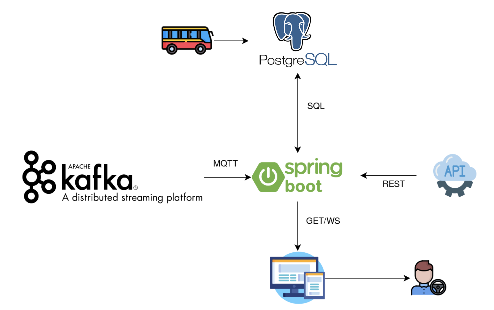

Our Vision
“We envision a city where drivers choose routes with little traffic in order to reach their destination quickly. Therefore, we will have a city with balanced traffic, less noise and more environmentally friendly.”
Personas
Name: João Ferreira
Age: 27
Occupation: Biologist
Location: Porto
Description: João is a researcher in the field of biology at the Faculty of Sciences of the University of Porto. He goes every day to work by car from the center of Porto to Massarelos where the college is located.
Motivation: He spends a lot of time in traffic in his way to work and therefore was looking for an app that could indicate the best route to work.
Goals: Therefore, he intends to use the BestPath app to be able to see which streets have less traffic and thus save time and fuel.

João Ferreira
Biologist
Name: Cátia Lima
Age: 22
Occupation: Student
Location: Vila Nova de Gaia
Description: Cátia is a medical student at the Institute of Biomedical Sciences (ICBAS). Due to the fact that she doesn't have a car, she needs to take 2 buses every day to go to college.
Motivation: On her way to college, she can choose two very different routes, however as she also doesn't know which route has more traffic, she ends up choosing at random, so she doesn't always choose the fastest route.
Goals: She intends to use the BestPath app to be able to see which route has less traffic and thus save time.
Cátia Lima
Student
Architecture
BestPath

Tests
Requirements
Operating Environment
The Web application should run on Firefox 68 or chromium 81
Design & Implementation Constraints
Each service must be developed on Dockerfile. All the data must be received based on a specific format
Assumptions & Dependencies
The system needs data from Porto's buses
Use Cases
Tests
Find the best path to your destination
1. Find the fastest path to the Ribeira
Given I am at Estação de São Bento
When I search for the fastest path to Ribeira
Then I find the road with less congestion
2. Simple and intuitive Visualization
Given I need instant information about road congestion
When I look to the Porto map
Then I regard the principal information to avoid some roads
Everybody wants to reach to the destination quickly
Statistics page
1. See more information about general road congestion
Given I want to know more information about road congestion
When I see the statistics page on BestPath system
Then I obtain detailed information about general road congestion
2. Make studies about road traffic at Porto
Given a person with interesting to study the road congestion
When using the information available on the system
Then the person can make a dataset
3. City official people make management based on existing data
Given data information about all the roads congestion
When official people want to improve the quality of traffic
Then they use the system to visualize the behaviour of the last times
A statistics page is available for everyone
All of the system need a data source
1. Consuming data from buses velocities information
Given several buses on Porto
When is necessary the information about traffic to process the data
Then use the velocity of these buses to know if the traffic is slow, fast or normal
2. Consuming data about maximum velocity to a given road
Given a road
When we know if that road is congestion or not
Then we compare the values of limits and the median velocity
To provide the information is necessary a data source
A web application is available to provide the system
1. I want to access the system to find the best path
Given the necessity to find the best path to the destination
When I access the web application
Then I can visualize the information
The system can be accessed by the web application
Feedback
1. I report the fails on road congestion predicts
Given I detect a fail on system or wrong road congestion predict
When I reach the destination
Then I report that on feedback that is required
Is required feedback at the end of use
Manual
-
1. Access the web page
-
2. Consult the map of the home page directly and intuitively with information about traffic on the streets of Porto
-
3. Open a new tab to see the statistics page
-
4. Open another tab to make a research on the best way forward to Ribeira